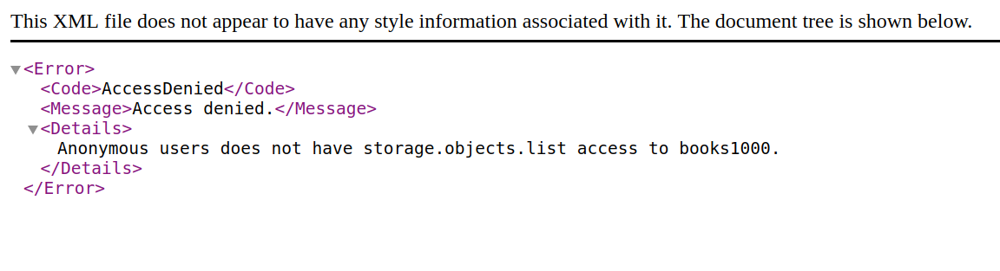

安装好环境
都是一些非常常用的包,自己电脑环境缺失的请用pip install package-name来装上,可以先不在这里看这些代码
从网上下载原始数据
使用代码进行下载的时候,有可能会被服务器拦截,最简单的方法就是双击点开这里, 手动下载到跟这个脚本同一级的文件夹中. 然后跳到下一节代码中去.
注意这里一共下载了两个数据包,一个是notMNIST_large.tar.gz,作为训练集和验证集, 一个是notMNIST_small.tar.gz, 作为测试集.
在下载的数据的时候,视频中给出的链接(也就是在代码中被注释掉的那个url)我下载不了,在浏览器中打开显示如下, 解决方法是使用上面代码中使用的url.
解压文件
|
|
读取数据包中的每一个图像
|
|
然后,将该图像中的数据对象使用pickle函数保存为字节码文件,方便使用.
需要注意的是,pickle生成的字节码文件虽然很方便,但是存在安全隐患,熟悉python pickle对象构造原理的黑客,可以在该对象中植入任何的代码,让你的电脑执行,所以我们要使用可信任来源的pickle数据.
这一个过程耗费的时间比较长,我的机械硬盘大概需要40分钟的样子才能完成这一个过程.
还原几幅字节码文件中内容,确保数据仍旧完好
|
|
数据重组
将10个文件夹中的数据合并到一起,并且进行重新洗牌,使每个手写字母数据充分混合,均匀分布
|
|
最后的整理
将数据整理成一个完好的数据,来给接下来的任务进行使用.
训练一个简单的神经网络测试结果
|
|